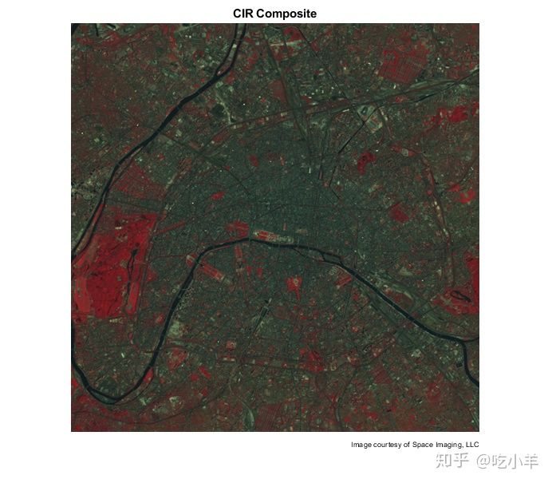
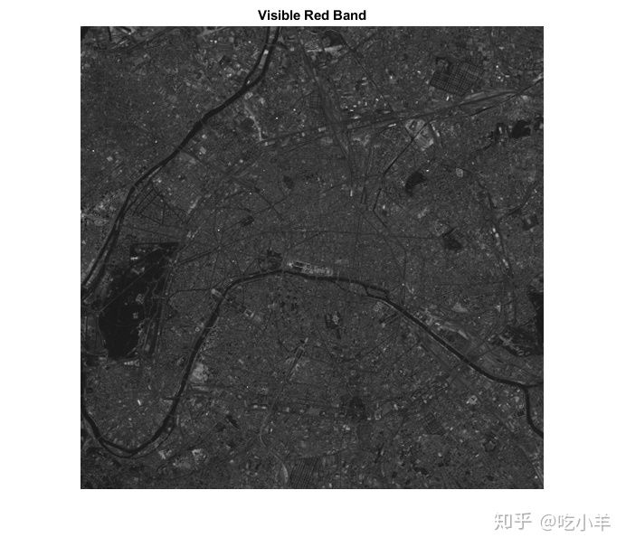
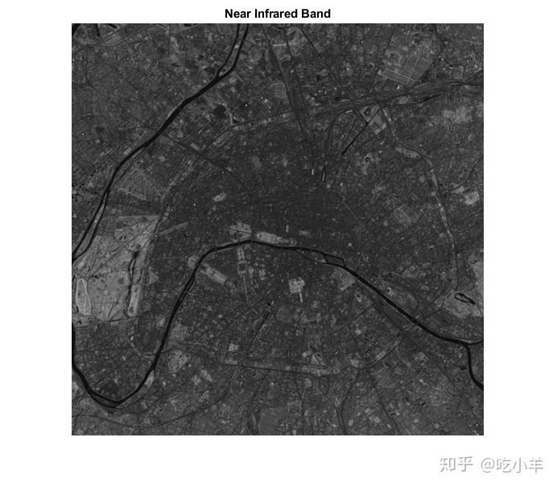
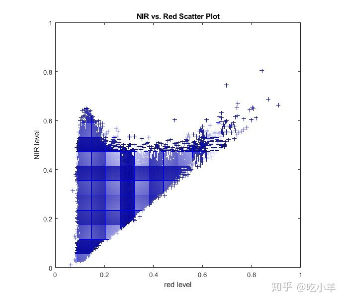
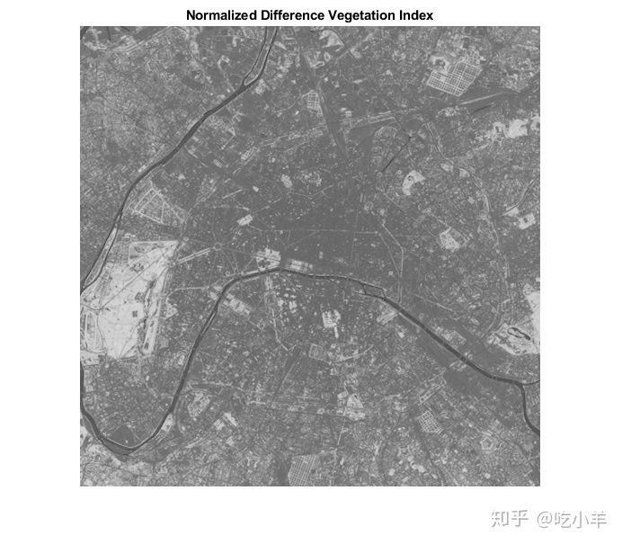
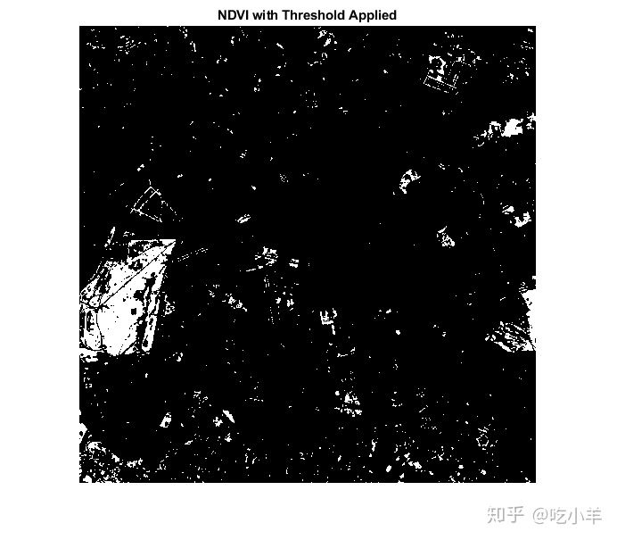
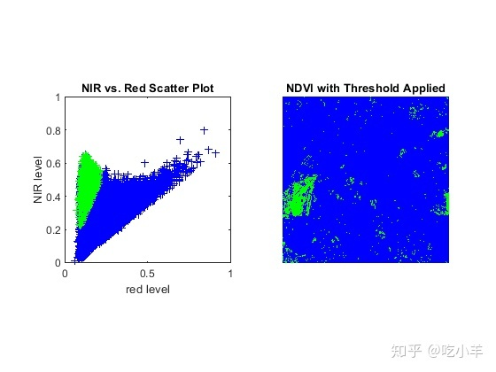

Home
本示例说明了如何使用MATLAB数组运算来处理图像和绘制图像数据。特别是，此示例适用于三维图像阵列，其中三个平面代表来自电磁频谱不同部分（包括可见红光和近红外（NIR）通道）的图像信号。
图像数据差异可用于区分图像的不同表面特征，这些特征在不同光谱通道之间具有不同的反射率。通过查找可见的红色和NIR通道之间的差异，该示例确定了包含大量植被的区域。
步骤1：从多光谱图像文件导入红外通道图像
此示例在由法国空间影像公司提供，演示LANDSAT专题制图仪图像中找到覆盖法国巴黎部分地面的植被。七个光谱通道（波段）以Erdas LAN格式存储在一个文件中。LAN文件paris.lan包含一个7通道512 x 512 Landsat映像。像素值后跟一个128字节的标头，这些像素值按频带数增加的顺序按行（BIL）进行频带交错。像素值以小尾数字节顺序存储为无符号的8位整数。
第一步是使用MATLAB函数multibandread从LAN文件中读取频段4、3和2 。
通道4、3和2覆盖电磁频谱的近红外（NIR），可见红色和可见绿色部分。将它们分别映射到RGB图像的红色，绿色和蓝色平面时，结果是标准的彩色红外（CIR）复合图像。给到函数multibandread的输入参数指定要读取的频段，以及读取的顺序，以便您可以在一个步骤中构造一个合成。
CIR = multibandread('paris.lan',[512, 512, 7],'uint8=>uint8',...
128,'bil','ieee-le',{'Band','Direct',[4 3 2]});
变量CIR是512×512×3数组,uint8类型。它是RGB图像，伪彩色。显示图像时，红色像素值表示NIR通道，绿色值表示可见的红色通道，蓝色值表示可见的绿色通道。
在CIR图像中，水特征非常暗（塞纳河），绿色植被显示为红色（公园和遮荫树）。大部分图像呈现出的，是由于健康，富含叶绿素的植被在近红外光中具有高反射率。由于NIR通道已映射到合成图像中的红色通道，因此任何具有高植被密度的区域在显示中都将显示为红色。一个明显的例子是左边缘的鲜红色区域，这是一个大型公园（Bois de Boulogne），坐落在巴黎市中心以西，塞纳河转弯处。
imshow(CIR)
title('CIR Composite')
text(size(CIR,2),size(CIR,1) + 15,...
'Image courtesy of Space Imaging, LLC',...
'FontSize',7,'HorizontalAlignment','right')

通过分析NIR和红色通道之间的差异，您可以量化植被区域和其他表面（如人行道，裸露的土壤，建筑物或水）之间的光谱含量之间的这种对比。
步骤2：构建NIR-红色光谱散点图
比较NIR通道（显示为红色像素值）和可见红色通道（显示为绿色像素值）时，散点图是很自然的研究起点。将这些通道从原始CIR合成中提取到单个变量中很方便。从uint8类型到 single 类型进行转换也很有帮助，以便可以在下面的NDVI计算以及散点图中使用相同的变量。
NIR = im2single(CIR(:,:,1)); R = im2single(CIR(:,:,2));
将两个通道作为灰度图像一起查看，您可以看到它们的外观有多么不同。
imshow(R)
title('Visible Red Band')

imshow(NIR)
title('Near Infrared Band')

通过简单地调用MATLAB中的plot命令，您可以创建一个散点图，该散点图显示每个像素一个点（在这种情况下为蓝色十字形），其x坐标由红色通道中的值确定，y坐标由NIR通道中的值确定。
plot(R,NIR,'+b')
ax = gca;
ax.XLim = [0 1];
ax.XTick = 0:0.2:1;
ax.YLim = [0 1];
ax.YTick = 0:0.2:1;
axis square
xlabel('red level')
ylabel('NIR level')
title('NIR vs. Red Scatter Plot')

巴黎场景的散点图呈现的是温带城市地区的特征，夏季树木茂盛。对角线附近有一组像素，其NIR和红色值几乎相等。该“灰色边缘”包括诸如路面和许多屋顶的特征。上方左侧是另一组像素，其NIR值通常远高于红色值。该区域基本上涵盖了所有绿色植被。
步骤3：通过MATLAB数组运算计算植被指数
从散点图中可以看出，采用近红外水平与红色水平的比率将是定位包含茂密植被的像素的一种方法。但是，对于两个通道中均具有较小值的暗像素，结果将是嘈杂的。还要注意，NIR和红色通道之间的差异应更大，以提高叶绿素密度。归一化植被指数（NDVI）是由第二个观测结果引起的。它采用（NIR-红色）差异并将其归一化，以帮助平衡不均匀照明的影响，例如云层或山丘的阴影。换句话说，在逐个像素的基础上，从NIR通道的值中减去红色通道的值，然后除以它们的总和。
ndvi = (NIR - R) ./ (NIR + R);
请注意，MATLAB中的数组算术运算符如何使通过一个简单的命令计算整个NDVI图像成为可能。 回想一下这些变量R并NIR具有
single类型。此选择使用的存储空间少于double类，但与整数类不同，它还允许所得比率采用平滑的值分级。
变量ndvi是single类别的二维数组，其理论最大范围为[-1 1]。 当显示ndvi为灰度图像时， 您可以指定这些理论极限。
figure
imshow(ndvi,'DisplayRange',[-1 1])
title('Normalized Difference Vegetation Index')

塞纳河在NDVI图像中显得很暗。图像左边缘附近较大的光线区域是前面提到的公园（Bois de Boulogne）。
步骤4：找到植被-为NDVI图像设置阈值
为了确定最有可能包含典型植被的像素，请对NDVI图像应用简单的阈值过滤。
threshold = 0.4; q = (ndvi > threshold);
因此所选择像素的百分比是：
100 * numel(NIR(q(:))) / numel(NIR) ans = 5.2204
大约5％。
显示逻辑（二进制）图像q时，默认情况下，公园和其他较小的植被区域显示为白色。
imshow(q)
title('NDVI with Threshold Applied')

步骤5：关联光谱和空间内容
要关联光谱和空间内容，您可以在NIR红色散点图上找到阈值以上的像素，用对比色（绿色）的阈值以上的像素重新绘制散点图，然后重新显示阈值NDVI图像使用相同的蓝绿色配色方案。不出所料，NDVI值高于阈值的像素出现在其余像素的左上方，并与CIR复合显示器中的红色像素相对应。
创建散点图，然后显示经阈值过滤的NDVI。
figure
subplot(1,2,1)
plot(R,NIR,'+b')
hold on
plot(R(q(:)),NIR(q(:)),'g+')
axis square
xlabel('red level')
ylabel('NIR level')
title('NIR vs. Red Scatter Plot')
subplot(1,2,2)
imshow(q)
colormap([0 0 1; 0 1 0]);
title('NDVI with Threshold Applied')

======================================================================
我的测试结果及程序
下面是我测试的代码：

注：本文根据MATLAB官网内容修改而成。